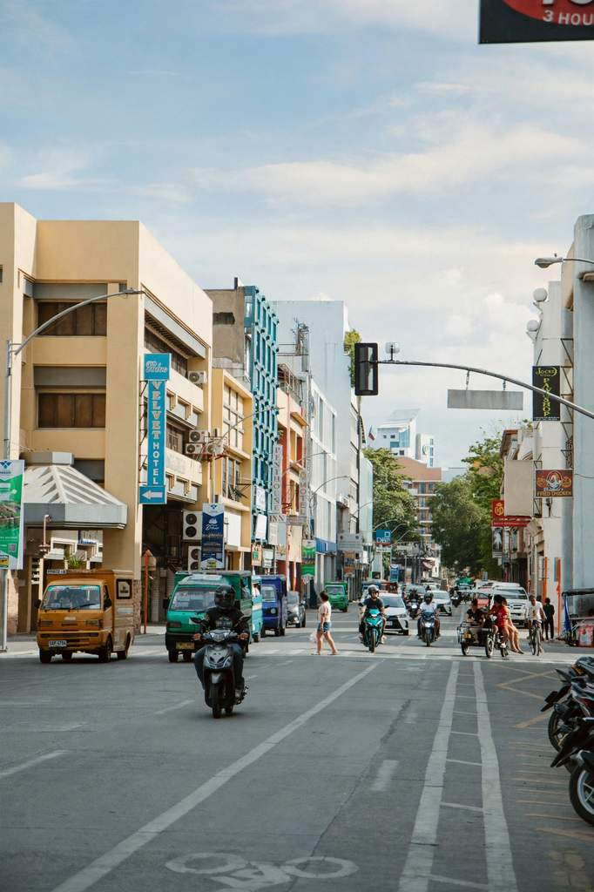

Davao City is many travellers' first taste of Mindanao, and it makes an easy one. Hotels, malls and good restaurants sit a short ride from parks, museums and fruit stalls. A day out of town takes you to forest, farms and the national bird, and the beaches of Samal are a few minutes across the water. Over two million visitors came in 2025, and the city has been adding new guided tours to keep up.
This guide covers what a first-timer needs before booking: how to get in, where to base yourself, how to get around, what to see and eat, when to come and how to budget. If you already know you want a day-by-day plan, skip ahead to our 3-day Davao City itinerary.
Plan on three days at the very least. Davao covers a huge area, the highlights are spread across it, and you will enjoy it more grouping stops by district than racing between them.

Getting to Davao City
Most visitors fly into Francisco Bangoy International Airport, usually just called Davao International Airport, in the northern part of the city. Domestic flights connect it with Manila, Cebu and other hubs, and some international routes land here as well. Schedules change by season, so compare carriers and check baggage rules before you book.
From the arrivals area, take an airport taxi, a Grab car or a transfer arranged by your hotel. The ride to downtown is short on paper, but traffic decides how long it takes. Overland, buses link Davao with other Mindanao cities. If you come that way, confirm which terminal you will arrive at and how you will reach your hotel from there.
Where to stay on a first visit
Pick a base by what you plan to do, not by the cheapest rate.
Downtown
Poblacion and the streets around City Hall, People's Park and San Pedro Street keep you close to the museums, the cathedral and the night market. This is the simplest choice if you plan to spend most of your time in the city and like to walk between stops.
Lanang and the north
Lanang sits closer to the airport, the big malls and Sasa Wharf, the main jump-off for Samal. It suits travellers with early flights or a beach day planned. Check the travel time to the places you actually want to see, since one hotel in "Lanang" can be much farther from the action than another.
Near one main activity
If your trip centres on a resort, the uplands or an early departure, staying close to that one thing can save hours. On a short visit, though, one well-placed base beats moving hotels. Before you pay, read recent reviews and check the cancellation rules and whether breakfast or airport pickup is included.
Getting around the city
Davao is big, and places that look close on a map can be half an hour apart in traffic. For a first visit, Grab and metered taxis are the easiest way to move around, with a hired car or an organised tour for the farther trips.
- DowntownGroup nearby stops and walk between them when the heat and the sidewalks allow it.
- The uplandsBook a round trip or settle your return ride before you leave the city, since cars are harder to find for the trip back.
- SamalThe bridge to the island is still under construction, so you cross by ferry. Check the departure point and the last boat back.
- JeepneysAsk locally for the right route and fare before you get on, and carry coins and small bills.
Best things to do in Davao City
Start at People's Park
People's Park is a good first stop. It has shaded paths, gardens and sculptures of Mindanao's indigenous peoples, and it gives you a cool break from the traffic. The National Museum's Davao branch is inside the compound and free to enter with an ID. Come in the morning or late afternoon, when it is cooler.
Learn the city's story
Davao is more than a food stop. Museo Dabawenyo explains how the city grew and how its many communities shaped it, from the indigenous peoples of the region to migrants from the Visayas, Luzon, China and Japan. Walk on to San Pedro Cathedral afterwards. At cultural spaces, follow the posted rules and ask before photographing people.
Meet the Philippine Eagle
The Philippine Eagle Center in Malagos, Calinan, cares for the country's critically endangered national bird and is the city's best-known wildlife stop. It is about an hour from downtown, so treat it as a half-day trip at least. Our Philippine Eagle Center guide covers fees, hours and how to get there.
Head out to the farms and uplands
Davao's outskirts feel nothing like its centre. You will find cacao farms and chocolate makers, fruit orchards, gardens and highland parks such as Eden Nature Park. They are far apart, so pick one or two for a day rather than trying to cover the whole area at once.
Join one of the city's new tours
In March 2026, the city tourism office launched four themed tours, which it calls tourism circuits: Abundant Harvest for farm tourism, Furusato Davao on the city's Japanese heritage, a Davao Food Crawl and a Market Experience through public markets and small local businesses. Ask the City Tourism Operations Office for schedules and how to join.
Cross to Samal for a beach day
Samal Island is the classic add-on for beaches, a bat cave and a sandbar. Give it a full day, or stay overnight if you want time on the sand. For stops beyond the resorts, see our guide to Samal Island beyond the resorts.
What to eat in Davao City
Fruit gets most of the attention, but there is plenty more to try. Menus and seasons change, so ask what is fresh.
Plan a food day by area. One market, a walk downtown and a couple of planned meals beat crossing the city for every famous restaurant.
A simple plan for a first visit
Three days covers the main bases without rushing:
- Day 1Downtown
People's Park, a museum, a food walk and fruit in the evening. Keep it light after travelling.
- Day 2The uplands
The Philippine Eagle Center and one more stop nearby, such as a cacao farm or a garden.
- Day 3Your choice
A market and food tour in the city, or Samal for the beach. Do not try to do both.
Our 3-day Davao itinerary lays this out with morning, afternoon and evening plans. If you fly out early on day four, keep the last evening free and confirm your airport ride.
When to go
Davao is a year-round destination. It sits south of the main typhoon belt, but rain can fall in any month, so check the forecast before an island crossing or a day in the gardens. Pack light clothes, good walking shoes, sun protection and a small umbrella.
The biggest crowds come with the festivals. The Kadayawan Festival in August celebrates the harvest and the city's indigenous groups and drew more than 200,000 visitors in 2025. The Pasko Fiesta season in December brings lights, a parade and night markets. Book early and confirm the official schedule if you plan around either one.
How much to budget
Costs depend on your dates, the kind of hotel you choose and how many tours you add, so budget by category instead of one daily figure:
- Room: compare downtown hotels, budget inns and places near your main activity.
- Food: mix market snacks and casual meals with a restaurant splurge.
- Transport: airport rides, city trips and the longer runs to the uplands or Sasa Wharf.
- Activities: entrance fees, guided tours and day passes on Samal.
- A buffer: for rain delays, extra rides and pasalubong.
Tips before you go
Before you fly
- Know the local rulesDavao enforces a public smoking ban, a firecracker ban and speed limits, and the police act on them.
- Carry cashMalls and larger restaurants take cards and e-wallets, but small vendors and drivers often want cash.
- Check opening hoursMuseums, farms and wildlife centres keep their own schedules, and some close on Mondays or holidays.
- Keep the basics handySave your hotel address offline, keep valuables secure and use legitimate transport. The national emergency number is 911.
- Read up on the wider regionDavao City itself is calm and orderly. If you plan to travel farther in Mindanao, check current advisories for each area first.
Is Davao worth it for a first trip?
Yes, especially if you want city comforts with food, culture and nature close at hand. Davao rewards a bit of planning: choose a base that suits your plans, group sights by area and give the uplands and Samal their own days. Do that and you will spend your trip enjoying the city instead of sitting in traffic.
Fees, schedules and tour offerings change, so confirm with each site or the city tourism office shortly before you travel.
Photo credit: Jeffrey Ligan on Pexels.


Comments
No comments yet. Been here recently? Share a tip or ask a question.
Leave a Reply